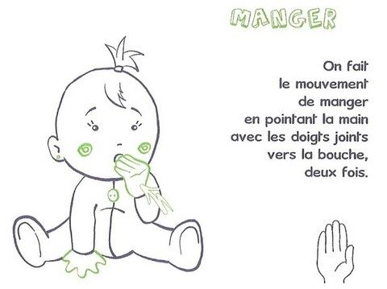
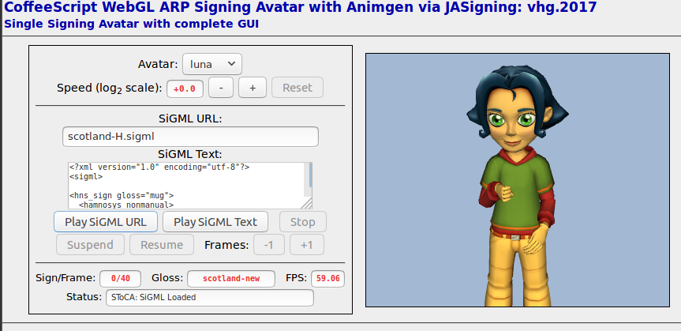
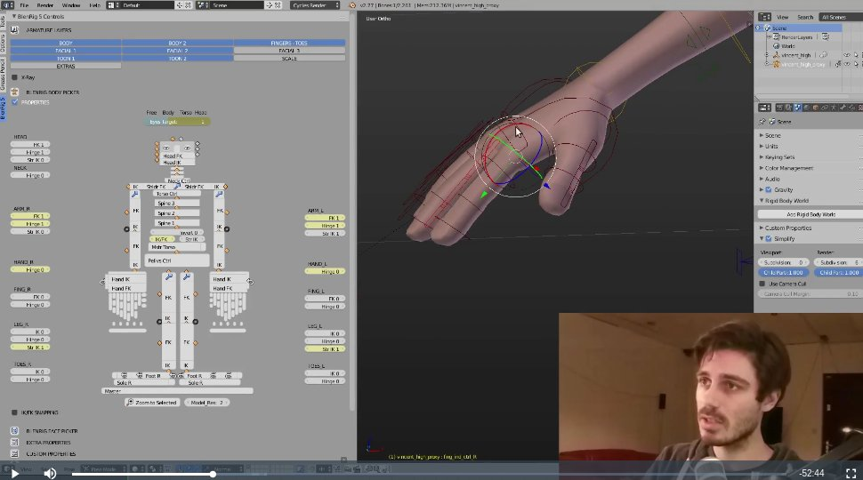
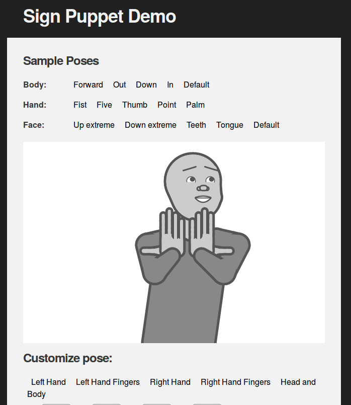

<!doctype html>
<html lang="en">
    <head>
        <meta charset="utf-8">
        <title>Arboresign</title>
        <link rel="stylesheet" href="./css/reveal.css">
        <link rel="stylesheet" href="./css/theme/league.css" id="theme">
        <link rel="stylesheet" href="./css/highlight/zenburn.css">
        <link rel="stylesheet" href="./css/print/paper.css" type="text/css" media="print">

    </head>
    <body>

        <div class="reveal">
            <div class="slides"><section  data-markdown><script type="text/template">


# Signothèque


Proposition de prototype, avril 2017

<br>
<small>version alpha 0.2</small><br><br><br>

<small>[sources](https://github.com/vvivanloc/arboresign) et [export PDF](slides.pdf)</small>
</script></section><section  data-markdown><script type="text/template">
## Plan

 * Contexte
 * Besoins
 * Editeur de signes
</script></section><section  data-markdown><script type="text/template">
<!-- .slide: data-background="img/1200px-Holečkova,_nápis_ve_znakové_řeči.jpg" -->


<br><br><br><br><br><br><br><br><br><br>
<small style="background-color: rgba(0,0,0,0.4); 
     bottom:0px;
     right:0px;
     position:absolute;" >
Relief en béton de langue des signes à Prague : « La vie est belle, soyez heureux et aimez. », par la sculptrice tchèque Zuzana Čížková, sur le mur d'une école pour les élèves sourds-muets.
ŠJů, Wikimedia Commons [CC BY-SA 3.0]((http://creativecommons.org/licenses/by-sa/3.0)
</small>
</script></section><section  data-markdown><script type="text/template">
# Contexte 

  * La surdité en France
  * La langue des signes
</script></section><section  data-markdown><script type="text/template">

## Qui cela concerne ?
Population sourde et malentendante en France

  * Un bébé sur 1000 est né Sourd
  * 300 000 déficients auditifs profonds
  * 100 000 pratiquants de la langue des signes française
 
(Union Nationale des Associations de Parents d’Enfants Déficients Auditifs, 2008)
</script></section><section  data-markdown><script type="text/template">
## La langue des signes

https://en.wikipedia.org/wiki/Sign_language

* Alphabet dactylologique (26)
* != Langue des signes (mime + alphabet + expressions)



</script></section><section  data-markdown><script type="text/template">
## La langue des signes

* 300 langues des signes dans le monde
* Grammaire : inflexion, conjugaison, spatialisation...
* Gestion de l'espace : postures du corps, des bras, de la tête, des yeux, des sourcils et de la bouche
* Gestion du temps : répétition, vitesse

</script></section><section  data-markdown><script type="text/template">
<!-- .slide: data-background="img/1200px-Holečkova,_nápis_ve_znakové_řeči.jpg" -->
</script></section><section  data-markdown><script type="text/template">
# Quel media ?

   * Vidéo 
   * Avatar 3D
   * Image 2D
</script></section><section  data-markdown><script type="text/template">
<!-- .slide: data-background="img/signwithrobert.gif" -->
## Vidéo
</script></section><section  data-markdown><script type="text/template">

## Vidéo

  * Avantages 
       - Compréhensible
       - Rapidité de la capture
  * Difficultés 
       - Qualité de la prise de vue 
       - Trouver des signeurs
</script></section><section  data-markdown><script type="text/template">
## Bibliothèques existantes


 Bibliothèques collaboratives : se filmer pour rajouter des signes

 - [Elix](http://www.elix-lsf.fr), 22 000 vidéos en LSF
 - [SpreadTheSign](http://www.spreadthesign.com), international, 13 210 vidéos
 - [WikiSign](http://www.wikisign.org), dictionnaire collaboratif, 561 signes (texte+vidéo)

...nécessite la bonne volonté des signeurs et une prise de vue de qualité
</script></section><section  data-markdown><script type="text/template">
## Avatar virtuel

  * Avantages
       - Editer les signes facilement
  * Difficultés
       - Edition complexe
      

</script></section><section  data-markdown><script type="text/template">
# Avatar

   * Avatar 3D ou 2D ?
</script></section><section  data-markdown><script type="text/template">
<!-- .slide: data-background="img/sign3D.png" -->
## Avatar3D
</script></section><section  data-markdown><script type="text/template">

## Applications : production de sous titrage

- Synthétiser un discours sans devoir filmer un traducteur humain
- Production *manuelle* de sous titrage en langue des signes SiMAX

<iframe width="560" height="315" src="https://www.youtube.com/embed/nqB6xnp6h_g" frameborder="0" allowfullscreen></iframe>
</script></section><section  data-markdown><script type="text/template">
## Génération automatique 
  - Texte -> HamNoSys -> SigML -> animation 
  - University of East Anglia, Virtual Humans Research for Sign Language Animation
  
  - [présentation](https://www.slideshare.net/RobertSmith56/zurich-avatar-talk-3)
       et  [démo](http://vhg.cmp.uea.ac.uk/tech/jas/vhg2017/WebGLAv.html)


</script></section><section  data-markdown><script type="text/template">
## Editeur 3D

 Interface [compliquée](https://cloud.blender.org/p/blenrig/57443403c379cf17984528fa) : vue 3D, gestion *trop* fine de l'animation, IK/FK


</script></section><section  data-markdown><script type="text/template">
<!-- .slide: data-background="img/languesigne4.jpg" -->
<h3 style="background-color: rgba(0,0,0,0.4);">Avatar 2D</h3>

</script></section><section  data-markdown><script type="text/template">
## Image 2D

  * Avantages
       - Pas besoin de dispositif d'affichage, imprimable 
       - Edition plus facile qu'avec un éditeur 3D (?)
       
  * Difficultés
       - Moins compréhensible qu'une vidéo/avatar 3D
       - Pas d'application connue pour éditer ces signes ?

</script></section><section  data-markdown><script type="text/template">
## Editeur 2D


Editeurs d'animation 2D

  - [live2D](http://www.live2d.com/cubism2-1/en.html)
  - [crazytalk animator](https://www.reallusion.com/crazytalk-animator/)
  - [Pivot animator](http://pivotanimator.net/Help.html)
  - [synfig](http://synfig.org/)
                
...mais trop compliqués
</script></section><section  data-markdown><script type="text/template">
<!-- .slide: data-background="img/arboresign.png" -->

</script></section><section  data-markdown><script type="text/template">
## Projet Arboresign/Signothèque

Signothèque, une bibliothèque de signes universelle, vectorielle, et libre

https://www.signotheque.arboresign.org/ 

  * Bibliothèque ~~de vidéos~~ d'**images** 
  * Ensemble de composants graphiques à combiner
</script></section><section  data-markdown><script type="text/template">


## Comment construire ces signes ?
  
  Editeur 2D collaboratif
  
 

</script></section><section  data-markdown><script type="text/template">

## Exemple de résultat
    
 

</script></section><section  data-markdown><script type="text/template">
# Besoins

 * Collaboratif
 * Format sortie  
 * Combien de symboles ?

</script></section><section  data-markdown><script type="text/template">

## Contraintes - collaboratif
    
 Application web ou native ?

  * Web : multiplateforme, pas d'installation
  * Natif : matériel particulier (accéléromètre, caméra, MagicLeaf, Kinect...)

</script></section><section  data-markdown><script type="text/template">

## Contraintes - format de sortie 
    
 * Bas débit : format léger 
 * Redimensionnable et configurable : format vectoriel
 * Interopérable : format ouvert
 * Indexation : métadonnées (meta tags)

 -> format choisi : SVG
</script></section><section  data-markdown><script type="text/template">

## Contraintes - combien de symboles

* Combien de mots et expressions en LSF ? + 22 000 

* Combien de signes à générer ?

  * Parties du corps à modéliser
      - tête : bouche, yeux, sourcils
      - mains
      - bras

  * Indiquer les mouvements avec des flèches
</script></section><section  data-markdown><script type="text/template">

## Contraintes - nombre de symboles 

Estimation du nombre de symboles basée sur l'écriture de la langue des signes américaine (ASL)
      
  - Valerie Sutton, [SignWriting](http://www.signwriting.org/forums/linguistics/ling004.html), 1974 
                      
  - Thomas Hanke, [HamNoSys](http://www.signwriting.org/forums/linguistics/ling007.html) Hamburg Notation System for Sign Languages, 2010            

  - aslfont, [police de caractères](https://aslfont.github.io/Symbol-Font-For-ASL/ways-to-write.html) pour l'ASL, 2013 
    
</script></section><section  data-markdown><script type="text/template">

## Contraintes - nombre de symboles

* SignWriting, écriture la plus utilisée pour l'ASL, entrée officielle [Unicode](http://www.unicode.org/charts/PDF/U1D800.pdf)
* ~ 240 caractères pour les mains 
* ~ 105 pour le visage !


* 100 signes pour les mains serait un bon début
</script></section><section  data-markdown><script type="text/template">
## Projet existant : Sign puppet 

Par le créateur des fonts ASL : [sign-puppet](https://github.com/aslfont/sign-puppet) - [demo](http://aslfont.github.io/sign-puppet/demo/)


</script></section><section  data-markdown><script type="text/template">
## Great job!

  - js (Canvas2D+JQuery)
  - licence: MIT
  - https://github.com/aslfont/sign-puppet


</script></section><section  data-markdown><script type="text/template">
<!-- .slide: data-background="img/roadmap.jpg" -->
</script></section><section  data-markdown><script type="text/template">
# Proposition de feuille de route
</script></section><section  data-markdown><script type="text/template">
## Proposition de feuille de route

1. Construire un éditeur 2D 
2. Mettre en place une plateforme collaborative

</script></section><section  data-markdown><script type="text/template">
## Proposition de feuille de route

- Construire un éditeur 2D 
     - Refactorer le code
     - Sauvegarder les configurations de signes
     - Rajouter une interface graphique pour éditer les configurations     
     - Exporter en SVG (fabric.js ?) 

</script></section><section  data-markdown><script type="text/template">

## Proposition de feuille de route

- Mettre en place d'une plateforme collaborative
     - Outil de collaboration
     - Architecture client/serveur
     - Base de données sur le serveur
</script></section><section  data-markdown><script type="text/template">
# Conclusion
</script></section><section  data-markdown><script type="text/template">
## Conclusion

- Signothèque : une bibliothèque de signes 2D
- Pas d'application existante pour générer cette bibliothèque
- Créer une plateforme d'édition collaborative en partant du projet github *sign puppet*

 
</script></section></div>
        </div>

        <script src="./lib/js/head.min.js"></script>
        <script src="./js/reveal.js"></script>

        <script>
            function extend() {
              var target = {};
              for (var i = 0; i < arguments.length; i++) {
                var source = arguments[i];
                for (var key in source) {
                  if (source.hasOwnProperty(key)) {
                    target[key] = source[key];
                  }
                }
              }
              return target;
            }

            // Optional libraries used to extend on reveal.js
            var deps = [
              { src: './lib/js/classList.js', condition: function() { return !document.body.classList; } },
              { src: './plugin/markdown/marked.js', condition: function() { return !!document.querySelector('[data-markdown]'); } },
              { src: './plugin/markdown/markdown.js', condition: function() { return !!document.querySelector('[data-markdown]'); } },
              { src: './plugin/highlight/highlight.js', async: true, callback: function() { hljs.initHighlightingOnLoad(); } },
              { src: './plugin/zoom-js/zoom.js', async: true },
              { src: './plugin/notes/notes.js', async: true },
              { src: './plugin/math/math.js', async: true }
            ];

            // default options to init reveal.js
            var defaultOptions = {
              controls: true,
              progress: true,
              history: true,
              center: true,
              transition: 'default', // none/fade/slide/convex/concave/zoom
              dependencies: deps
            };

            // options from URL query string
            var queryOptions = Reveal.getQueryHash() || {};

            var options = {"transition":"fade","pdfMaxPagesPerSlide":"1"};
            options = extend(defaultOptions, options, queryOptions);
            Reveal.initialize(options);
        </script>
        
    </body>
</html>
